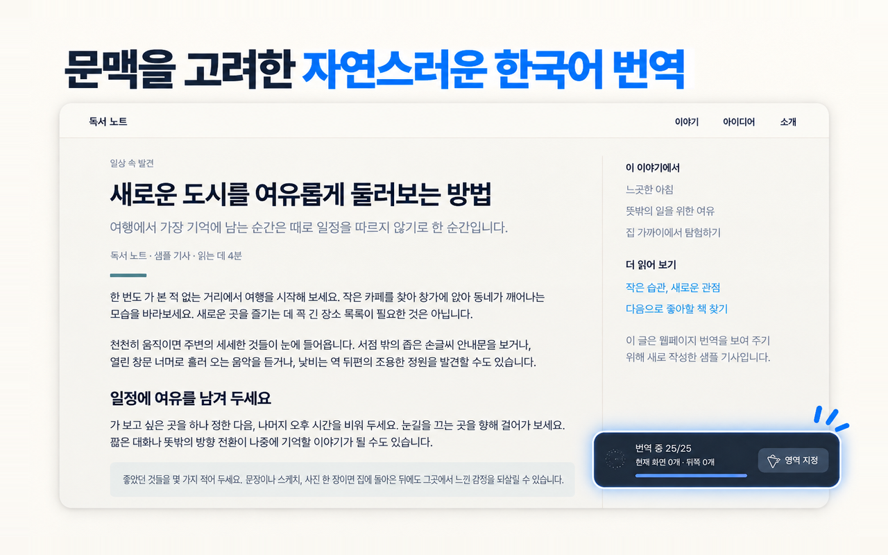
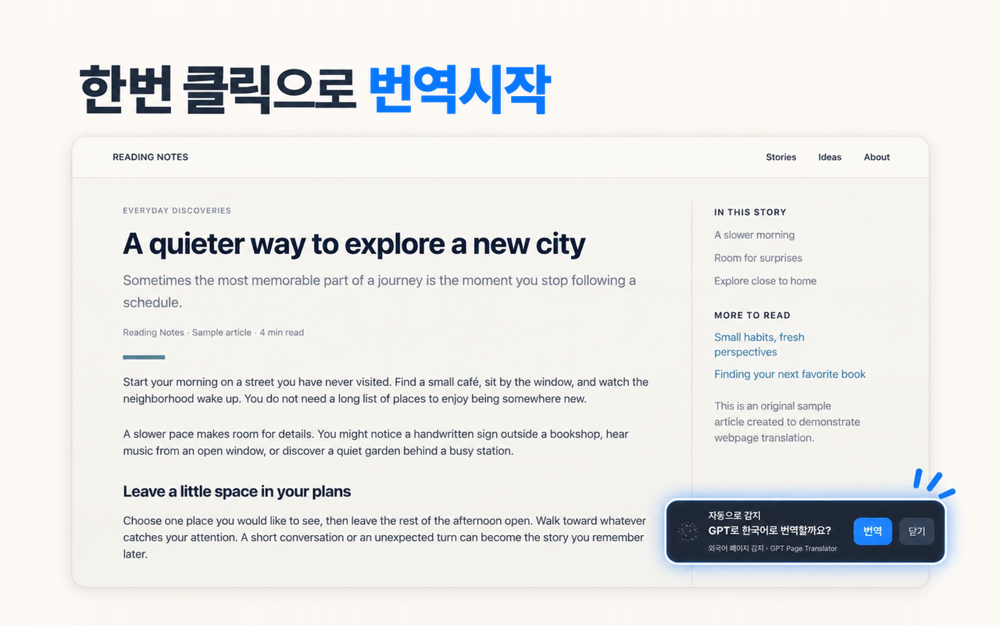

문맥까지 이어지는 번역
GPT-6 Luna가 문장과 주변 문맥을 고려해 자연스러운 한국어로 옮깁니다.
WEB TRANSLATION, A LITTLE MORE NATURAL
읽고 싶은 글에 집중하세요.
GPT-6 Luna가 문맥을 고려해 번역하고,
원래 페이지의 흐름은 최대한 그대로 남깁니다.
Windows 보조 프로그램 별도 설치 · ChatGPT Plus/Pro 필요

BUILT FOR YOUR READING FLOW
기사부터 긴 게시물까지.
페이지를 떠나지 않고 이어 읽으세요.
GPT-6 Luna가 문장과 주변 문맥을 고려해 자연스러운 한국어로 옮깁니다.
이미지와 링크, 주요 레이아웃을 최대한 유지하고 텍스트를 바꿉니다.
번역 결과가 도착하면 페이지에 순차적으로 반영합니다.
번역을 켜둔 페이지에서 동적으로 추가되는 콘텐츠도 감지합니다.
번역을 중단하거나 원래 텍스트로 되돌리고, 다시 번역할 수 있습니다.
사이트별 자동 번역과 상시 번역을 직접 설정할 수 있습니다.
SAME PAGE. A DIFFERENT WAY TO READ.

01지금 읽는 영역부터현재 화면을 우선 처리합니다.
02내가 원하는 속도로느림부터 매우 빠름까지 선택합니다.
03필요할 때 멈추기중단하고 원문으로 돌아갑니다.
THREE STEPS TO GET STARTED
Chrome 웹스토어에서
GPT Page Translator를 추가하세요.
보조 프로그램을 설치하고
Google Chrome 또는 Comet을 선택하세요.
확장 팝업에서 ChatGPT 계정을 연결하고
한국어로 번역을 시작하세요.
공식 Sign in with ChatGPT를 사용합니다. 번역 텍스트는 OpenAI로 전송되며, 인증 토큰은 로컬 보조 프로그램에서 보호합니다.
확장과 보조 프로그램은 개인·비상업적 용도로 무료 제공됩니다. 다만 번역에는 별도의 지원되는 ChatGPT Plus 또는 Pro 구독과 GPT-6 Luna 모델 사용 권한이 필요합니다. 무료 ChatGPT 계정은 지원하지 않습니다.
공식 ChatGPT 인증, 로컬 인증 정보 보호, 번역 요청 처리를 담당합니다. 확장과 Native Messaging으로 통신하며, 인증 토큰을 웹페이지나 확장에 전달하지 않습니다.
지원되는 Plus/Pro 계정, GPT-6 Luna 모델 접근 권한과 공식 플랜 사용 승인이 필요합니다. 계정의 사용량 제한이 적용되며 무제한 번역을 보장하지 않습니다.
별도 API 키는 필요하지 않습니다. 공식 Sign in with ChatGPT로 본인 계정을 연결합니다.
Windows 10/11 x64의 Google Chrome과 Comet을 지원합니다. 사용할 브라우저에서 확장을 설치하고, 보조 프로그램에서 같은 브라우저를 선택해 연결하세요.
macOS는 개발 환경에서 연결을 확인한 단계입니다. 일반 사용자용 DMG는 아직 출시하지 않았으며, 현재 제공하는 Windows EXE는 Mac에서 실행할 수 없습니다.
번역 대상 텍스트와 주변 문맥은 OpenAI로 전송됩니다. 사이트 자동 번역·상시 번역을 켜면 새 콘텐츠나 설정 범위의 페이지도 매번 클릭 없이 전송될 수 있습니다. 자세한 내용은 개인정보처리방침을 확인하세요.
연결 도구에서 사용할 브라우저를 다시 선택해 연결하고 브라우저를 완전히 재시작하세요. 설치·문제 해결 안내에서 재연결 경로와 진단 방법을 확인할 수 있습니다.
MAKE THE WEB FEEL A LITTLE CLOSER
확장은 무료 · 별도 Windows 보조 프로그램과 ChatGPT Plus/Pro 필요